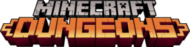
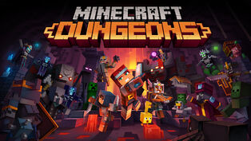
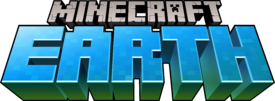
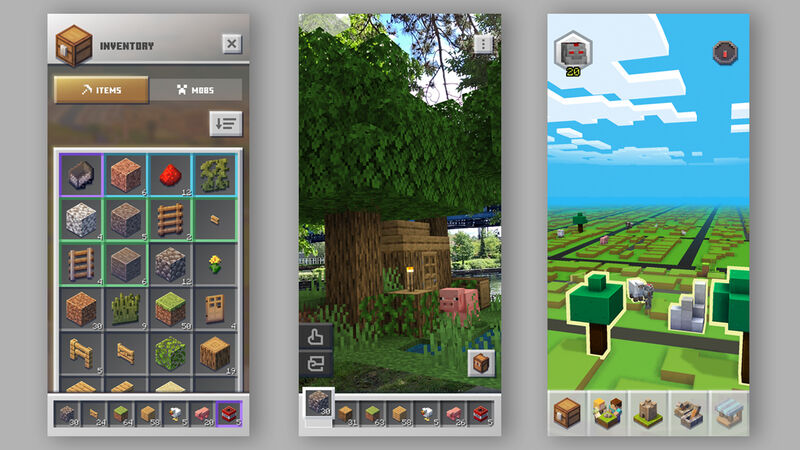

|
Otros juegos de Minecraft, ¿Cuáles son?
|
|
Aparte de Minecraft Java Edition y Minecraft Bedrock edtion, contamos con otros videojuegos producidos por Mojang y basados en Minecraft que podrían interesarte.
Minecraft Dungeons
|
Minecraft Dungeons es un videojuego de rol de acción y aventura desarrollado por Mojang Studios, Xbox Game Studios y Double Eleven. Fue publicado el 26 de mayo del 2020, para Windows, Xbox One, Nintendo Switch, y PlayStation 4. La edición base del juego está disponible por US$19.99 (€19.99, £16.74, AU$29.95), y la Hero edition por US$29.99 (€29.99, £24.99, AU$39.95), lo que incluye el Pase de héroe, lo que a su vez incluye la Capa de héroe, al Polluelo como mascota, a los aspectos Pake y Wargen, y los paquetes de contenido descargable (DLC) La jungla despierta e Invierno espeluznante.El pase de temporada puede además comprarse por US$19.99 (€19.99, £16.74, AU$29.95) e incluye el DLC Las cumbres de los aullidos y los siguientes 3 paquetes de DLC que serán publicados. Las versiones de Windows 10 y Xbox One también están disponibles como parte del Xbox Game Pass, con los suscriptores del Xbox Game Pass Ultimate siendo capaces de jugar en dispositivos Android vía Xbox Game Pass cloud gaming. Las versiones de Xbox One y PlayStation 4 se pueden jugar en Xbox Series X|S y PlayStation 5 respectivamente vía retrocompatibilidad.
|
|

Minecraft Dungeons fue lanzado el 26 de mayo del 2020
|
|
|
|
|
El juego soporta hasta cuatro jugadores y varias nuevas armas, objetos y criaturas, así como una variedad de entornos para explorar y una misión general en la que los jugadores se enfrentan a un antagonista principal, llamado el Archimaldeano.
El juego tiene misiones específicas y ubicaciones, junto con elementos generados proceduralmente. El jugador no está restringido a una clase y puede recoger más armaduras o armas y usarlas. Los jugadores no construyen ni extraen porque el juego se centra en la acción/aventura. El juego se desarrolla tanto por encima como por debajo del suelo. Los jugadores pueden volver a jugar los niveles que han superado anteriormente. Hay un campamento "mundo central" que tiene lugar en parte del nivel del tutorial, Costa calamar. Se pueden desbloquear tiendas en "salas ocultas". Los niveles son generados proceduralmente, y Mojang consideró usar semillas de mundo.
Los jugadores pueden elegir su avatar entre una variedad de aspectos proporcionados, con más por venir como DLC de pago. Los aspectos del creador de personajes y los aspectos compradas en Minecraft vanilla no están disponibles para usarse en Dungeons.
Personaje
El personaje es la persona que el usuario controla en el juego. Al crear un personaje, el usuario puede elegir un aspecto cosmético que puede usar durante todo el juego, todos los aspectos son iguales y no ofrecen poderes especiales. (Nótese que también es posible cambiar el aspecto en cualquier momento en la pantalla de selección de personaje).
Cuando se crea un personaje, todo el botín, niveles, y progreso obtenido se queda solo en ese personaje y no se traslada a otros personajes que cree el usuario. Si se inició el juego con un personaje pero se desea un personaje alterno con diferente botín, se puede duplicar un personaje con el mismo botín que tenía.
Ubicaciones
Cuando se inicia el juego por primera vez con un nuevo personaje, el jugador comienza en la Costa Calamar. Luego progresa a través de las otras ubicaciones, como El bosque de los Creeper, hasta que alcance el nivel final del juego, el Pináculo de obsidiana. A veces una ubicación puede generar una sala que permite acceder a una ubicación secreta, como la Cripta espeluznante, el Templo inferior, la Cueva húmeda o el Archirefugio. Se puede acceder a otros niveles completando niveles normalmente, como los Pastos de calabazas, las Minas de redstone, el Cañón de los Cactus y las Salas de los Altos Bloques. La mayoría de las ubicaciones y la historia principal toman lugar en el Continente. Algunas ubicaciones solo están disponibles a través de paquetes de DLC, notablemente La jungla despierta, Invierno espeluznante y Las cumbres de los aullidos.
Objetos
Las armas son herramientas que se usan para dañar entidades con ataques cuerpo a cuerpo o a distancia. Pueden encantarse para incrementar su efectividad.
La armadura se utiliza para proteger al jugador del daño y provee salud adicional. Puede encantarse para incrementar su efectividad.
Los artefactos son objeto que el jugador puede usar para ganar una ventaja de poder significativa, dañar enemigos, curar aliados, etc.
Los consumibles son objetos no equipables que caen aleatoriamente durante el juego para restaurar salud, munición y proveer efectos de estado positivos temporalmente al usuario.
Los cosméticos incluyen mascotas y capas que no proveen beneficios funcionales al jugador. Obtenibles comprando paquetes de DLC.
Los jugadores pueden regalar armas, armadura y artefactos a otros jugadores interactuando con el Envolvedor de regalos.
Encantamientos
Hay varios tipos de encantamientos en Minecraft Dungeons. Los encantamientos se dividen en tres categorías principales: armas cuerpo a cuerpo, armas a distancia, y armadura. Cada una de las tres clases contiene encantamientos exclusivos, cambiando como cada objeto actúa con su grupo. Para encantar armaduras, armas cuerpo a cuerpo o armas a distancia se necesitan puntos de encantamiento que pueden obtenerse subiendo de nivel. Algunos encantamientos pueden darle a las criaturas ciertos efectos de estado que pueden ser positivos o negativos.
Criaturas
Las criaturas en Minecraft Dungeons generalmente son hostiles e intentan matar al jugador. Las únicas excepciones son el cerdo, el gólem de llave, la oveja, el ocelote, el panda, el conejo y el muñeco de práctica, y las criaturas invocadas por los jugadores. Hay también solo dos criaturas neutrales que atacan únicamente si el jugador las ataca primero, siendo el oso polar y la cabra.
Hay tres tipos de enemigos a los que el jugador se enfrenta en el juego: criaturas, minijefes, y jefes. Matar a estos enemigos le da al jugador experiencia y usualmente sueltan esmeraldas, consumibles, y objetos. Los enemigos también son usados para completar ubicaciones.
|
| 
Arte por Mojang Studios
|
|
| Componente |
Recomendadom |
| OS |
Windows 10 versión 1909 (Actualización de noviembre del 2019) o superior, 8 o 7 |
| Procesador |
Intel Core i5 2.8GHz o equivalente |
| Memoria (RAM) |
8GB o más |
| Espacio en el disco duro |
Espacio disponible de 6GB |
| Controladores gráficos |
NVIDIA GeForce GTX 660 o AMD Radeon HD 7870 o equivalente DX11 GPU con 2GB o más |
| Versión de DirectX |
11 o superior |
|
|
Minecraft Earth
|
|
Minecraft Earth es un juego alterno gratuito de realidad aumentada (RA) para dispositivos móviles desarrollado por Mojang Studios y publicado por Xbox Game Studios para iOS, iPadOS, y Android. El juego trata de construir estructuras y recolectar materiales viajando a lugares de la vida real. Minecraft Earth fue publicado en beta cerrada el 16 de julio de 2019, y expandió gradualmente sus países disponibles durante el resto de 2019, siendo publicado en todo el mundo el 11 de diciembre de 2019. El juego recibió su actualización final, 0.33.0, el 5 de enero de 2021, y se descontinuará el 30 de junio de 2021, debido a restricciones en las actividades al aire libre como resultado de la pandemia de COVID-19. El 1 de julio de 2021, a todos los jugadores que hayan pagado por Rubíes se les dará Minecoins y una copia de Bedrock Edition a cambio.
|
| 
Minecraft Earth fue lanzado el 21 de noviembre de 2019
|
|
|
|
|
Minecraft Earth es una adaptación de la experiencia tradicional de Minecraft a una perspectiva de realidad aumentada, parecido a Ingress y Pokémon Go. El juego en sí fue construido con el motor Bedrock. Similar al juego principal, cuenta con muchos aspectos de juego únicos e interacciones.
Minecraft Earth requiere una cuenta de Xbox Live.
El juego utiliza Microsoft Azure Spatial Anchors junto con OpenStreetMap para potenciar una jugabilidad basada en la ubicación. Esta tecnología sincroniza la posición de las placas de construcción en multijugador haciendo referencia a objetos en el mundo real, creando una experiencia apreciable.
Se anunció que el Nether y el End fueron planeados para Minecraft Earth en una actualización futura, pero esos planes fueron descartados con el juego descontinuándose el 30 de junio de 2021.
|
|
En Minecraft Earth, los jugadores pueden construir estructuras con otros jugadores y "colocarlas en el mundo real a tamaño real".
En la vista del mapa, los jugadores pueden ver su personaje, que puede cambiarse con skins propias del mercado o generarse usando el Creador de Personajes. Dispersos alrededor de los mapas hay tocables. Si un elemento táctil está dentro del rango de colección de un jugador, el jugador puede tocarlo y recolectar elementos. Hay varios tipos de tocables, que incluyen piedra, hierba, estanque, cofres y criaturas.
Aventuras
Las aventuras aparecen en el mapa, pero también se pueden generar usando cristales de aventura. Las aventuras son el aspecto de supervivencia de Minecraft Earth. Los jugadores pueden luchar contra las criaturas, recolectar recursos adicionales que no están disponibles con los tocables y recolectar recompensas. Las aventuras solo se pueden jugar en modo de tamaño real.
Placas de construccion
Las placas de construcción son mundos en los que los jugadores pueden construir. Se pueden compartir de forma remota para verlos y los jugadores invitados pueden trabajar en ellos en la misma ubicación.
Las placas de construcción pueden tener un tamaño de bloques de 8×8, 16×16 o 32×32, y su límite de altura de construcción es de 221 bloques. Desde el nivel del suelo, una placa de construcción también se extiende hacia abajo en profundidad variable, dependiendo de la placa de construcción. La profundidad mínima antes de que aparezca la bedrock después de excavar es de 3 bloques y la placa de construcción con la profundidad máxima registrada es de 12 bloques.
Usando la tienda, los jugadores pueden comprar nuevas parcelas usando rubíes. Las parcelas también se pueden obtener mediante un sistema de nivelación.
Las placas de construcción funcionan como dimensiones personales y se pueden usar en cualquier lugar. Se ejecutan en Bedrock Engine, lo que significa que redstone, físicas y otras mecánicas son idénticas a las de la Edición Bedrock. Los jugadores pueden invitar a amigos a construir con ellos localmente y luego compartir el mundo con otros a través de un enlace.
Un jugador puede interactuar con una placa de construcción en los modos miniatura y de tamaño real. En el modo miniatura, la placa de construcción funciona igual que el modo creativo en Minecraft, lo que permite al jugador construir estructuras y poblar la placa de construcción con monstruos. En el modo de tamaño real, la placa de construcción funciona igual que el modo supervivencia, en el que el jugador debe usar herramientas para interactuar con los bloques, las criaturas hostiles lo atacan y el jugador puede perder salud y vida.
Una característica planeada que se anunció pero nunca se implementó fue la capacidad de fijar placas de construcción en el mapa para que otros jugadores las vieran públicamente.
Las placas de construcción también se pueden compartir a través de un enlace, por lo que los jugadores no necesitan estar en la misma ubicación que el creador para ver las creaciones. Los enlaces compartidos pueden ser temporales o no expirar nunca. Mojang Studios afirma tener un equipo de moderación de 24/7 que revisa y analiza informes de compilaciones inapropiadas.
Las aventuras de Minecraft Earth tienen sus propias placas de construcción, con estructuras aéreas y subterráneas predefinidas y criaturas hostiles. Al igual que las placas de construcción del usuario, una placa de aventura debe colocarse en algún lugar del suelo antes de interactuar con ella. Un jugador no puede guardar ni mover las placas de construcción de aventuras, aunque varios jugadores pueden interactuar con la misma aventura al mismo tiempo.
Desafios
Similar a los progresos en Java Edition y los logros en Bedrock Edition, los desafíos son tareas asignadas al jugador para guiar al jugador. Hay 3 tipos de desafíos; Desafíos diarios, estacionales, y tocables. Estos desafíos pueden involucrar tareas individuales, el jugador obtiene rubíes y experiencia después de completarlos, el jugador obtiene crédito al completar un desafío, por ejemplo, si la tarea del jugador es recolectar 6 helechos, y otro desafío es para recolectar 4 helechos, y el jugador obtiene 2 helechos, se aplicaría a ambas tareas.
|
| 
Juego de Minecraft Earth.
|
|